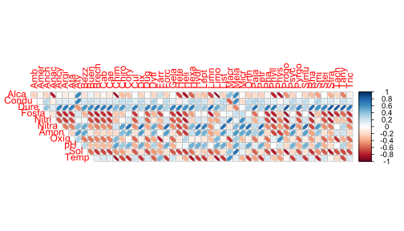
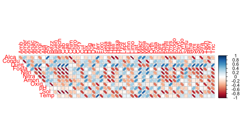
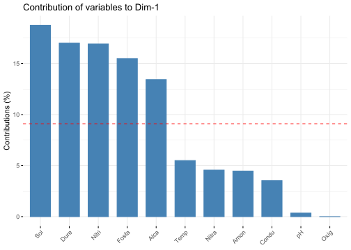
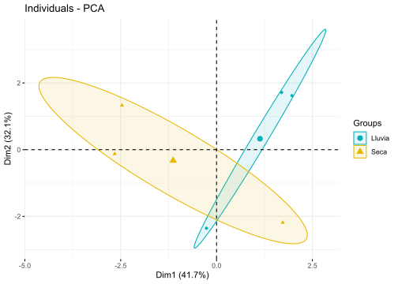
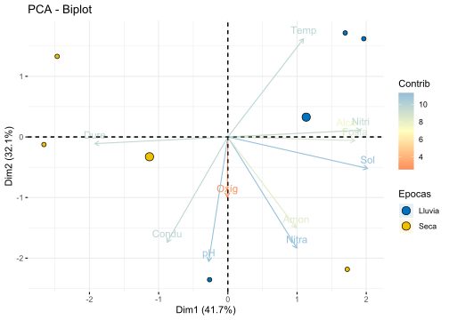
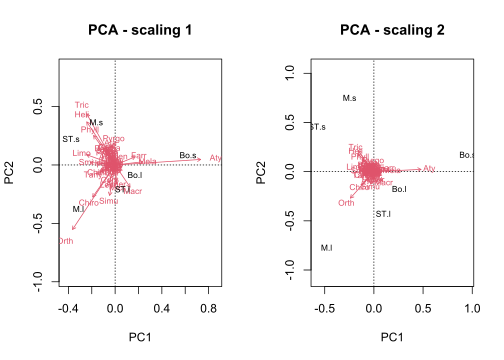
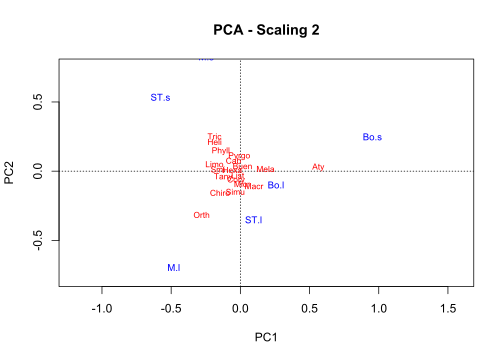
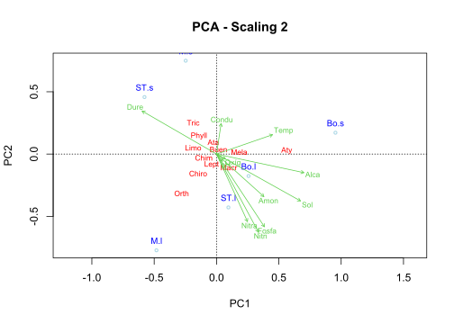
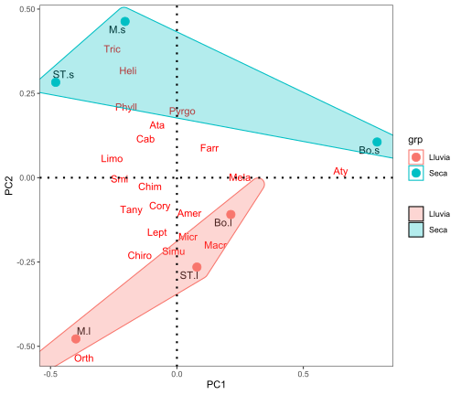
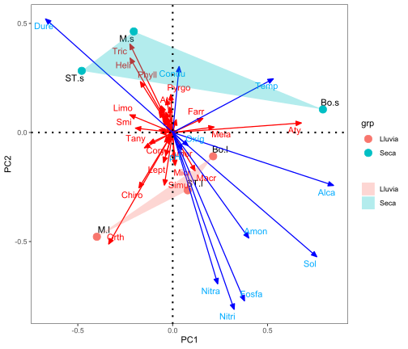

# Librerías requeridas
library(ggplot2)
library(reshape2)
library(ggrepel)
library(vegan)
library(factoextra)
library(ggsci)
library(ggforce)
library(concaveman)
library(corrplot)Taller 4.2 Análisis de Componentes Principales - PCA
Ambientales - Quebradas del PNN Tayrona
Ejemplo de bahías de Santa Marta
El siguiente ejemplo tiene en cuenta a la propuesta de Legendre & Gallagher (2001), en el cual se realiza una linealización de datos de abundancias de taxones, mediante la transformación de Hellinger, para poderlas ordenar en un PCA. Adicionalmente se incorporan las variables ambientales, con el objeto de analizar como estas caracterizan a las biológicas en gradientes espaciales y/o temporales. La base de datos que se utilizará es Tayrona.csv y el archivo de R es Tayrona.pca.r. Estos datos corresponden a un estudio realizado en el 2015, en el Parque Nacional Natural Tayrona (PNNT), valorando la fauna de invertebrados acuáticos y variables fisicoquímicas asociadas en diferentes quebradas de ese lugar. Estos datos hacen parte del trabajo realizado por Bruges Emilio (2022).
Ejercicio tomado de: Rodríguez-Barrios (2023) Enlace del libro
Enlace de los archivos del libro
Fuentes bibliográficas sobre el análisis de componentes principales:
PCA en factoextra - datanovia
Guía práctica sonre el PCA - datanovia
PCA para variables categóricas - R-bloggers
Capítulo PCA - Libro Numerical Ecology with R - Borcard et al. 2018
# Lectura de la base de datos "FQmarino"
datos <-read.csv2("Tayrona.csv",row.names=1) # file.choose()
View(datos)
# str(datos)
Exploración Gráfica
# Matriz de correlaciones (M)
amb = datos[,c(2:12)]
biol = datos[,c(13:63)]
M <- cor(amb, biol)La Figura 1 muestra la relación entre las variables, a partir de figuras de elipses.
x11(8, 6)
corrplot(M, method = "ellipse", type = "upper")
1) Ajuste de las bases de datos fisiqcoquimica (amb) y biológica (tax.hel)
datos$Epoca = as.factor (datos$Epoca) # Convertir Epoca a factor
# Variables ambientales
amb= log10(datos[,c(2:12)]+1)
round(head(amb),1) Alca Condu Dure Fosfa Nitri Nitra Amon Oxíg pH Sol Temp
M.s 2.2 2.8 1.7 0.0 0.0 0.2 0 0.6 1.0 2.3 1.4
ST.s 2.1 2.8 1.7 0.1 0.1 0.2 0 0.8 1.0 2.4 1.4
Bo.s 2.2 3.0 1.7 0.1 0.1 0.5 0 0.8 1.0 2.6 1.4
M.l 2.2 2.9 1.7 0.1 0.1 0.5 0 0.7 1.0 2.5 1.4
ST.l 2.2 2.5 1.6 0.2 0.1 0.3 0 0.7 0.9 2.5 1.4
Bo.l 2.2 2.4 1.7 0.1 0.1 0.3 0 0.6 1.0 2.6 1.4# Siete primeros Taxones transformados con Hellinger
tax.hel= decostand(datos[,c(13:63)],"hellinger")
round(head(tax.hel[,1:7]),2) Amb Amer Anch Anac Ancy Argi Ata
M.s 0.11 0.13 0.04 0.00 0.03 0.07 0.30
ST.s 0.07 0.07 0.00 0.08 0.00 0.04 0.14
Bo.s 0.04 0.06 0.00 0.00 0.00 0.00 0.06
M.l 0.09 0.17 0.10 0.00 0.00 0.00 0.00
ST.l 0.00 0.20 0.00 0.14 0.00 0.00 0.31
Bo.l 0.00 0.32 0.00 0.00 0.00 0.00 0.10# Matriz de correlaciones con variables transformadas (M1)
M1 <- cor(amb, tax.hel)La Figura 2 muestra la relación entre las variables, con las transformaciones realizadas.
# Figuras de elipses con variables transformadas
x11(8, 6)
corrplot(M1, method = "ellipse", type = "upper")
2) PCA con paquete factoextra
pca1 <- prcomp(amb,scale.=T)
summary(pca1)Importance of components:
PC1 PC2 PC3 PC4 PC5 PC6
Standard deviation 2.1415 1.8802 1.3296 0.90111 0.54661 1.977e-15
Proportion of Variance 0.4169 0.3214 0.1607 0.07382 0.02716 0.000e+00
Cumulative Proportion 0.4169 0.7383 0.8990 0.97284 1.00000 1.000e+00
2.1) Contribución eje 1
La Figura 3 muestra las contribuciones de cada variable ambiental al pca.
x11(5,5)
fviz_contrib(pca1,choice="var",axes=1)
2.2) Elipses por cada periodo climático
La Figura 4 muestra la ordenación de las localidades por cada periodo climático.
fviz_pca_ind(pca1, geom.ind = "point",
col.ind = datos$Epoca, # Colores por grupo - periodo
palette = c("#00AFBB", "#E7B800", "#FC4E07"),
addEllipses = TRUE, ellipse.type = "confidence",
legend.title = "Groups")
2.3) Escala de contribuciones de las observaciones y las variables
La Figura 5 muestra las contribuciones de cada variable ambiental al pca.
fviz_pca_biplot(pca1,
# Observaciones (Sitios)
geom.ind = "point",
fill.ind = datos$Epoca, col.ind = "black",
pointshape = 21, pointsize = 2,
palette = "jco",
addEllipses = TRUE,
# Variables ambientales
col.var = "contrib",
gradient.cols = "RdYlBu",
legend.title = list(fill = "Epocas", color = "Contrib",
alpha = "Contrib"))
3) PCA con vegan
pca2 <- rda(tax.hel)
3.1) Insumos del análisis
*Nota: No se ejecutará el siguiente comendo para poder resumir los insumos obtenidos del análisis.
# Insumos del pca
summary(pca2)
3.2) Autovalores
# Ajuste del pca
round((ev <- pca2$CA$eig),2) PC1 PC2 PC3 PC4 PC5
0.22 0.12 0.09 0.06 0.03
3.3) Figura del PCA
La Figura 6 muestra dos opciones de visualizar los resultados del pca “scaling 1” y “scaling 2”.
# Panel con dos figuras del pca
x11(12,6)
par(mfrow=c(1,2))
biplot(pca2, scaling=1, main="PCA - scaling 1")
biplot(pca2, main="PCA - scaling 2") 
3.4) PCA con vegan - biplot + orditorp
La Figura 7 muestra la ordenación de las localidades y los taxones con “scaling 2”.
x11(8,8)
biplot(pca2, choices = c(1, 2),type = "n",scaling =2,
main="PCA - Scaling 2",cex=2) # Panel gráfico
text(pca2, display="sites", cex=0.8,
col="blue", lwd=1.5, pos=3) # Figura de sitios y Épocas
ordi=orditorp(pca2, display = "species",
shrink = FALSE, col = "red", type="n") # Taxones Filtrados
3.5) PCA con vegan + orditorp + envfit (ajuste ambiental)
La Figura 8 muestra la ordenación de las localidades, los taxones y las variables ambientales con “scaling 2”.
biplot(pca2, choices = c(1, 2),type = "n",scaling =2,
main="PCA - Scaling 2",cex=2) # Panel gráfico
text(pca2, display="sites", cex=0.8,
col="blue", lwd=1.5, pos=3) # Figura de sitios y Épocas
ordi=orditorp(pca2, display = "species",
shrink = FALSE, col = "red", type="n") # Taxones Filtrados
points(pca2, display = "sites",
cex = 0.6, col = "lightblue", lwd=1.5) # Opcional - puntos de muestreo
amb1 = envfit(pca2,amb) # Insertar variables ambientales en el pca
plot(amb1,col=3,cex=0.7)
#—-
4) PCA con paquete ggplot2
Realización pca de los paquetes factoextra y ggbiplot Para gererar las coordenadas de los sitios y taxones
# Nuevamente el pca
pca3 <- prcomp(tax.hel)
4.1 Coordenadas de los sitios y el factor “coord.sit”
coord.sit <- as.data.frame(pca3$x[,1:2]) # Coordenadas de los sitios
coord.sit$sitio <- rownames(coord.sit) # Crear una columna con nombres de los sitios
coord.sit$grp <- datos$Epoca # Adicionar columna de grupos por Epoca
head(coord.sit) # vista resumida de las coordenadas de sitios PC1 PC2 sitio grp
M.s -0.20509987 0.4633949 M.s Seca
ST.s -0.47947160 0.2828349 ST.s Seca
Bo.s 0.79183051 0.1058759 Bo.s Seca
M.l -0.39969319 -0.4779970 M.l Lluvia
ST.l 0.07910077 -0.2650291 ST.l Lluvia
Bo.l 0.21333338 -0.1090797 Bo.l Lluvia
4.2 Coordenadas de los taxones “coord.tax”
coord.tax <- as.data.frame(pca3$rotation[,1:2]) # Dos primeros ejes
coord.tax$especies <- rownames(coord.tax) # Insertar columna con nombres de las especies
head(coord.tax) PC1 PC2 especies
Amb -0.050809593 0.05712214 Amb
Amer 0.005666684 -0.12845725 Amer
Anch -0.042528327 -0.04368374 Anch
Anac -0.024746853 -0.02282280 Anac
Ancy -0.006287099 0.02558412 Ancy
Argi -0.029886629 0.06956166 Argi
4.3 Coordenadas de las ambientales “coord.amb”
amb1 = envfit(pca3,amb)
coord.amb = as.data.frame(scores(amb1, "vectors"))
coord.amb$amb <- rownames(coord.amb) # Insertar columna con nombres de las ambientales
head(coord.amb) PC1 PC2 amb
Alca 0.84803475 -0.2427936 Alca
Condu 0.03410165 0.3025273 Condu
Dure -0.67034682 0.5206620 Dure
Fosfa 0.37835304 -0.7719269 Fosfa
Nitri 0.32400015 -0.8109169 Nitri
Nitra 0.23720481 -0.6939225 Nitra
4.4 Figura con de elipses por concavidades - geom_mark_hull
La Figura 9 muestra la ordenación de las localidades, los taxones y los periodos climáticos.
x11(6,6)
ggplot() +
# Sitios
geom_text_repel(data = coord.sit,aes(PC1,PC2,label=row.names(coord.sit)),
size=4)+ # Muestra el cuadro de la figura
geom_point(data = coord.sit,aes(PC1,PC2,colour=grp),size=4)+
scale_shape_manual(values = c(21:25))+
# Taxones *valores de cero para caracteres de las flechas (arrow)
geom_segment(data = coord.tax,aes(x = 0, y = 0, xend = PC1, yend = PC2),
arrow = arrow(angle=0,length = unit(0,"cm"),
type = "closed"),linetype=0, size=0,colour = "red")+
geom_text_repel(data = coord.tax,aes(PC1,PC2,label=especies),colour = "red")+
# Factor
geom_mark_hull(data=coord.sit, aes(x=PC1,y=PC2,fill=grp,group=grp,
colour=grp),alpha=0.30) +
geom_hline(yintercept=0,linetype=3,size=1) +
geom_vline(xintercept=0,linetype=3,size=1)+
guides(shape=guide_legend(title=NULL,color="black"),
fill=guide_legend(title=NULL))+
theme_bw()+theme(panel.grid=element_blank())
4.5 Figura con vectores de especies y ambientales
La Figura 10 muestra la ordenación de las localidades, los taxones, las variables ambientales y los periodos climáticos.
library(ggrepel)
x11(6,6)
ggplot() +
# Sitios
geom_text_repel(data = coord.sit,aes(PC1,PC2,label=row.names(coord.sit)),
size=4)+ # Muestra el cuadro de la figura
geom_point(data = coord.sit,aes(PC1,PC2,colour=grp),size=4)+
scale_shape_manual(values = c(21:25))+
# especies
geom_segment(data = coord.tax,aes(x = 0, y = 0, xend = PC1, yend = PC2),
arrow = arrow(angle=22.5,length = unit(0.25,"cm"),
type = "closed"),linetype=1, size=0.6,colour = "red")+
geom_text_repel(data = coord.tax,aes(PC1,PC2,label=especies),colour = "red")+
# Ambiental
geom_segment(data = coord.amb,aes(x = 0, y = 0, xend = PC1, yend = PC2),
arrow = arrow(angle=22.5,length = unit(0.25,"cm"),
type = "closed"),linetype=1, size=0.6,colour = "blue")+
geom_text_repel(data = coord.amb,aes(PC1,PC2,label=row.names(coord.amb)),colour = "#00abff")+
# Factor
geom_polygon(data=coord.sit,aes(x=PC1,y=PC2,fill=grp,group=grp),alpha=0.30) +
geom_hline(yintercept=0,linetype=3,size=1) +
geom_vline(xintercept=0,linetype=3,size=1)+
guides(shape=guide_legend(title=NULL,color="black"),
fill=guide_legend(title=NULL))+
theme_bw()+theme(panel.grid=element_blank())
Taller de entrenamiento
Objetivo: Poner en práctica los conceptos vistos en este taller, realizando las siguientes opciones realizando un PCA que integgre a las variables biológicas (taxones) y a las ambientalñes de la base seleccionada. Enviar los resultados al Teams del profesor.